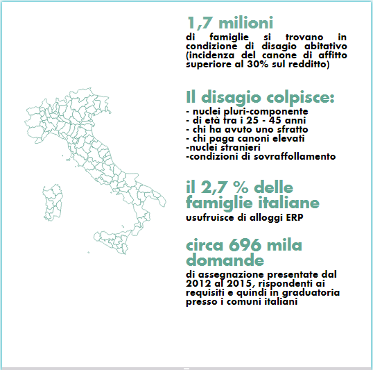

Dati Italia e Bologna
Il tema casa rappresenta ormai da diversi anni un problema di carattere nazionale; la crisi economica diffusa a partire dal 2008 ha portato, infatti, all'aumento di situazioni di criticità legate principalmente alla perdita del lavoro e, di conseguenza, alla riduzione del patrimonio dei cittadini. Le situazioni di fragilità e vulnerabilità sociale si sono estese dunque anche quelle fasce di popolazione che da una condizione di benessere si sono trovate all'improvviso a dover fare i conti con uno status economico inatteso e difficile da affrontare.
Il disagio abitativo, infatti, non riguarda solo categorie tradizionalmente svantaggiate come disoccupati, lavoratori precari ed extracomunitari, ma anche le famiglie monoreddito o a reddito medio basso che non riescono ad accedere al mercato privato della locazione a causa dell'elevato costo dei canoni di affitto e di una scarsa disponibilità di alloggi di edilizia residenziale pubblica (ERP) ceduti in locazione.
Oltre all'incalzante crisi economica, l'emergenza abitativa in tutto il Paese può essere attribuita anche alla crescente riduzione di alloggi ERP dovuta al processo di dismissione avviato nel 1993, che ha determinato una perdita di oltre il 22% del patrimonio. Il ricavato delle vendite degli alloggi di edilizia residenziale pubblica, infatti, non risulta sufficiente a ricostruire nemmeno un terzo del patrimonio venduto a causa dei prezzi definiti in maniera non coerente con i prezzi di mercato degli alloggi.
In ultimo, ma non per importanza, ad aggravare la situazione è anche la mancanza di finanziamenti costanti: fino al 1998 il settore dell'edilizia sociale ha beneficiato dei fondi Gescal, grazie ai quali è stato possibile ridurre il fabbisogno abitativo. Eliminati i fondi Gescal, a questi non è corrisposta nessuna risorsa sostitutiva che garantisse una continuità alle politiche di welfare nel settore abitativo.
Con il Piano Casa, ovvero con la Legge 80/2014, sembra aprirsi tuttavia uno spiraglio, infatti la legge, attraverso la modifica delle misure per l'alienazione degli alloggi di edilizia residenziale pubblica e la formulazione di un Programma di recupero e razionalizzazione degli immobili, prevede il ripristino di alloggi di risulta e la manutenzione straordinaria anche ai fini dell'adeguamento energetico, e che le risorse derivanti dalle alienazioni siano destinate esclusivamente alla realizzazione o all'acquisto di nuovi alloggi ERP.
L'importo complessivo assegnato alla Regione Emilia-Romagna è di euro 35.173.991,11.
Focalizzandoci sullo scenario italiano, riportiamo alcuni dati della ricerca effettuata da Nomisma per conto di Federcasa, dai quali emerge che nel 2015:

Anche la città di Bologna, in merito alla situazione abitativa, presenta degli elementi di progressiva criticità. Secondo quanto emerge dall'indagine sui bilanci delle famiglie italiane condotta dalla Banca d'Italia e dai dati pervenuti da Acer Bologna e Istat, nel 2014 i nuclei familiari bolognesi che si trovavano in una condizione di disagio economico erano 20.100, ossia il 40,3% del totale.
Uno scenario complesso è anche quello mostrato dal forte calo delle assegnazioni di alloggi di edilizia residenziale pubblica. Si è passati, infatti, da un totale di 305 alloggi assegnati nel 2007 a 135 alloggi nel 2015.
Secondo il Presidente di Acer Bologna, le cause di questo calo repentino sono da attribuire a tre principali fattori:
- la possibilità di presentare domanda per alloggi ERP online attraverso modulo di autocertificazione: questo comporta molto spesso la presentazione di domande non idonee e dunque un gap tra domande presentate e alloggi assegnati;
- la modifica del valore ISEE;
- la modifica delle legge regionale 24/2001 che prevede differenti soglie economiche per l'accesso e per la permanenza in alloggi ERP.
Questi sono certamente alcuni dei fattori da tenere in considerazione per la diminuzione del flusso di assegnazioni negli ultimi anni, ma va specificato innanzitutto il fatto che la novità inerente la possibilità di autocertificazione è stata introdotta nel novembre 2012, quindi sembra strano che il vertiginoso calo si verifichi solo nel 2015. In dubbio è anche l'influenza sul 2015 della modifica del valore ISEE, in quanto risalente a giugno 2016, con la delibera G.R. 894 del 13 luglio 2016.
Qui di seguito riportiamo l'intervista a Claudio Felicani, Presidente di Acer Bologna, il quale si esprime a questo proposito in rappresentanza di tutto l'ente gestore.
Ulteriore aspetto interessante dello scenario bolognese che emerge dalla ricerca effettuata da Nomisma, è la differenza tra i profili dei richiedenti e i profili degli utenti degli alloggi ERP, che può essere sintetizzata di seguito:
Richiedenti:
- Cittadinanza straniera: 57,2%
- Nucleo pluricomponente: 50,2%
- Coppie giovani: 18,2%
- Incidenza del canone sul reddito: > 30% : 54,9%
- Età < 45 anni 58,1%
- Reddito familiare > 26000 €: 5,8%
Utenti:
- Cittadinanza straniera: 14,5%
- Nucleo pluricomponente: 33,0%
- Coppie giovani: 0,2%
- Età < 45 anni: 15,7%
- Reddito familiare > 26000 €: 18,7%
Viene quindi da chiedersi quanto l’ente gestore persegua il proprio ruolo preoccupandosi concretamente di rispondere al fabbisogno abitativo che caratterizza le famiglie che vivono a Bologna.